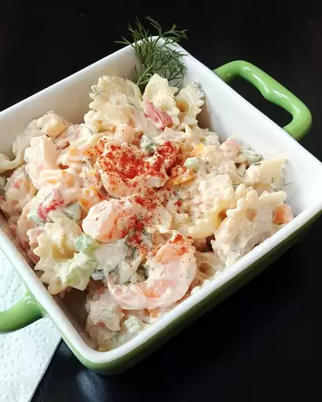

Home
Shrimp Pasta Salad

A photo of Shrimp Pasta Salad. Source: allrecipes.com
This creamy garlic shrimp pasta is the perfect combination of rich flavor
and simple ingredients. Juicy shrimp are sautéed in butter, garlic, and
herbs, then tossed with al dente pasta and a smooth, cheesy cream sauce.
Whether you're cooking for a cozy dinner or impressing guests, this
one-pan dish is quick to make and full of restaurant-style flavor — all
from your own kitchen!
Ingredients
Dressing:
- 1 ¼ cups mayonnaise, or more if needed
- 2 teaspoons Dijon mustard
- 2 teaspoons ketchup
- ¼ teaspoon Worcestershire sauce
- 1 teaspoon salt, or to taste
- 1 pinch cayenne pepper, or to taste
- 1 lemon, juiced
- ⅓ cup chopped fresh dill
Salad:
- 1 (12 ounce) package small pasta shells
- 1 pound cooked, peeled, and deveined small shrimp - cut in half
- ½ cup finely diced red bell pepper
- ¾ cup diced celery
- salt and ground black pepper to taste
- 1 pinch paprika, for garnish
- 3 sprigs fresh dill, or as desired
Steps
-
Whisk 1 ¼ cups mayonnaise, Dijon mustard, ketchup, Worcestershire sauce,
salt, and cayenne pepper together in a bowl; add lemon juice and 1/3 cup
chopped dill. Whisk until thoroughly combined; keep refrigerated.
-
Bring a pot of well-salted water to a boil and stir in pasta shells;
cook until tender, 8 to 10 minutes. Drain and rinse with cold water to
cool pasta slightly; drain again. Transfer to a large bowl.
-
Toss shrimp with pasta; add red bell pepper, celery, and dressing to
pasta mixture. Mix thoroughly to coat and fill shells with dressing.
Cover bowl with plastic wrap and refrigerate until chilled, 2 to 3
hours.
-
Stir salad again before serving and season to taste with more salt,
black pepper, lemon juice, and cayenne pepper if desired. If salad seems
a little dry, mix in a little more mayonnaise. Garnish with paprika and
sprigs of dill.